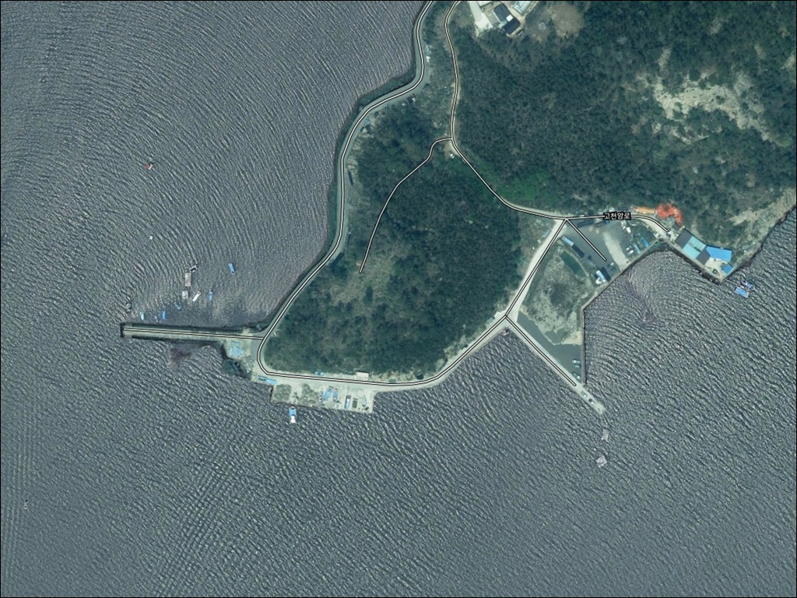
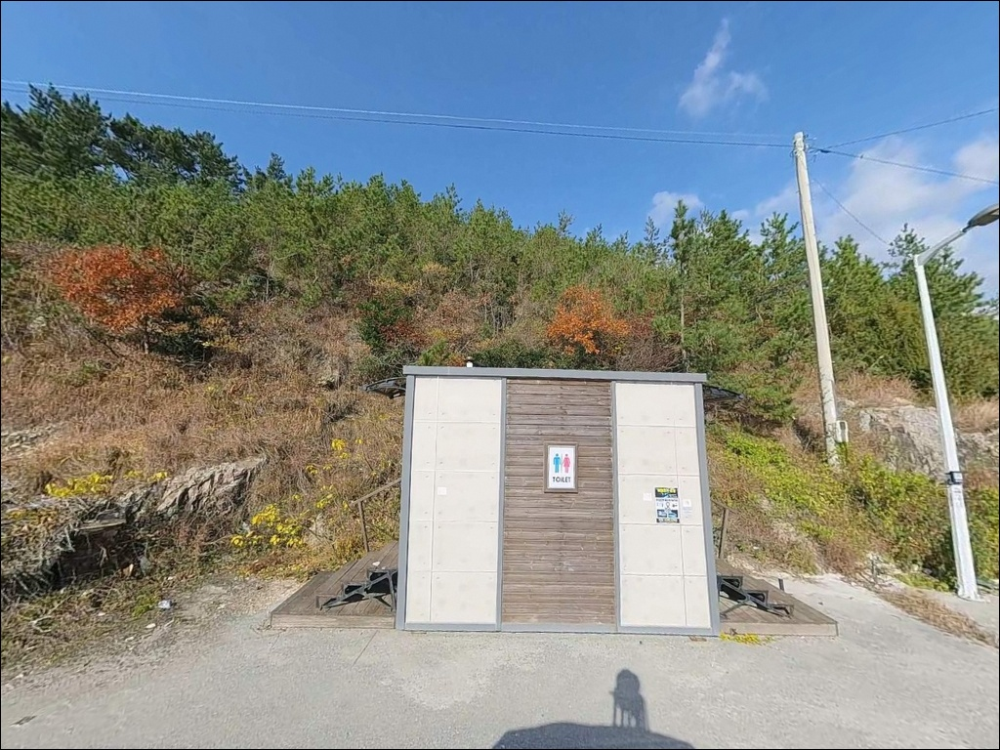
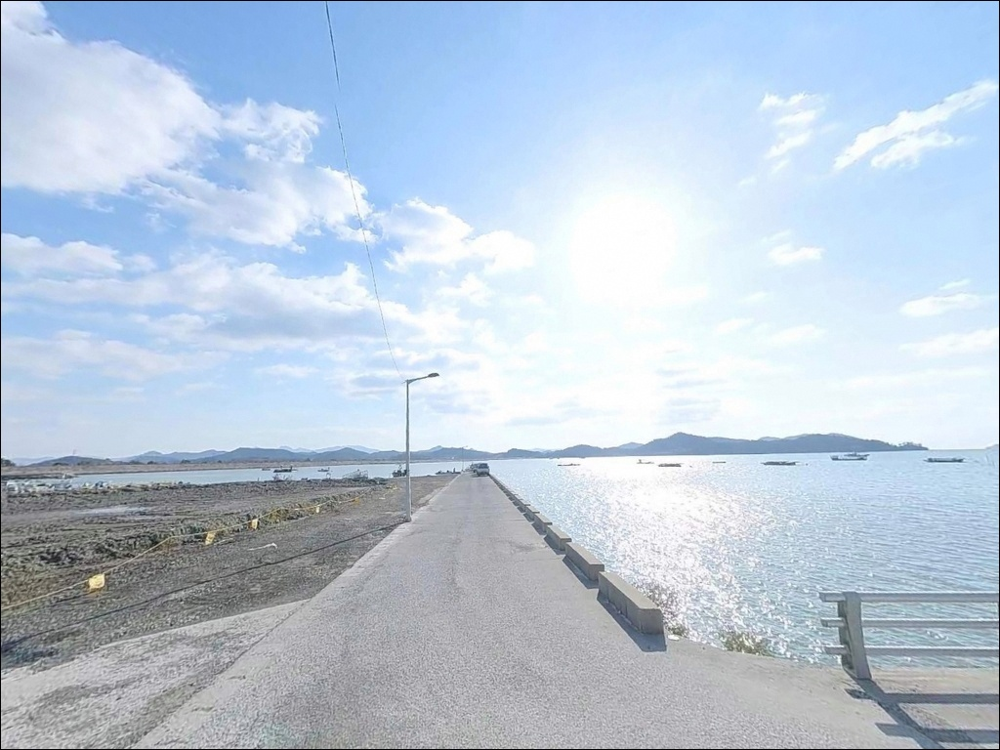
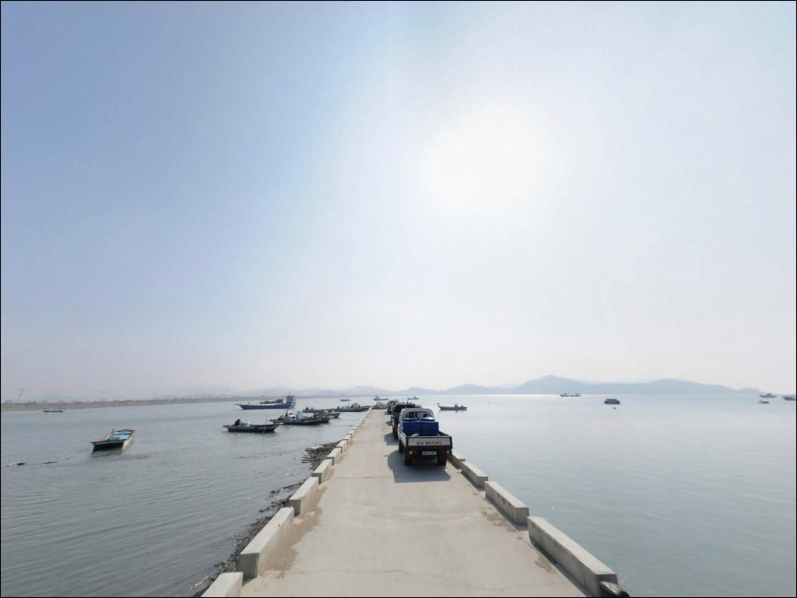
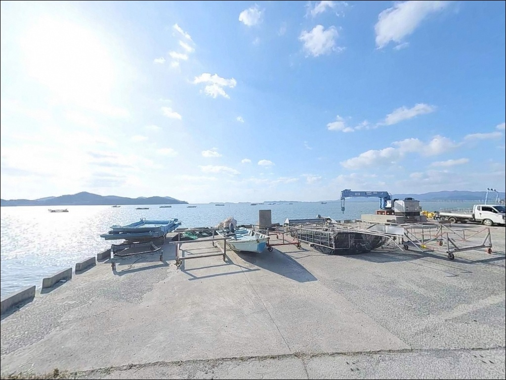
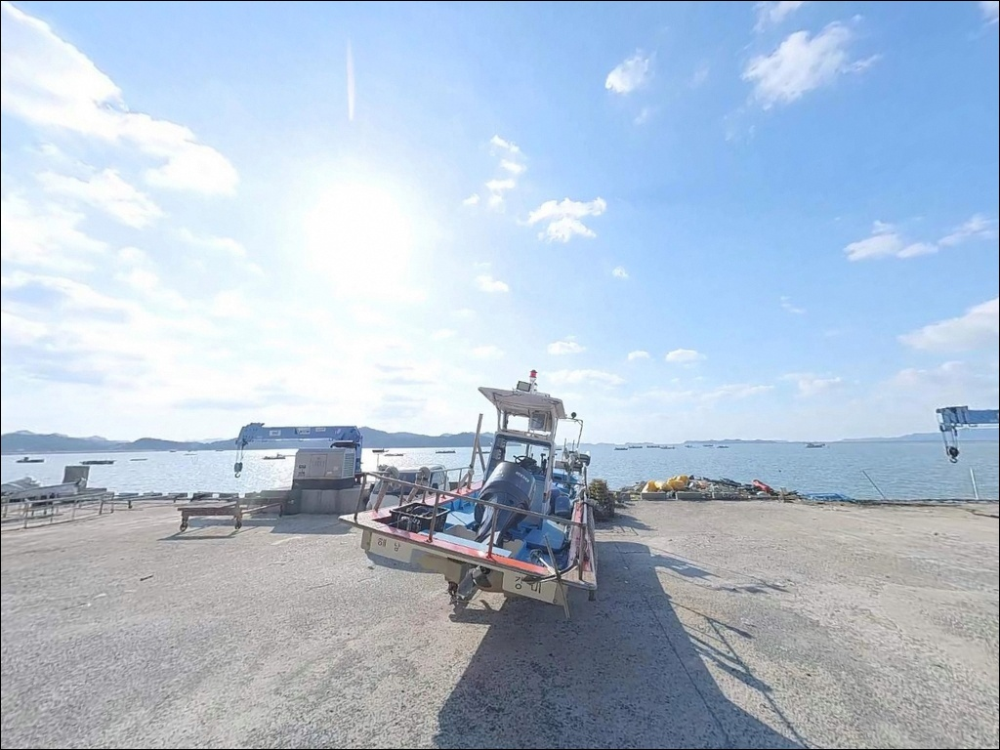
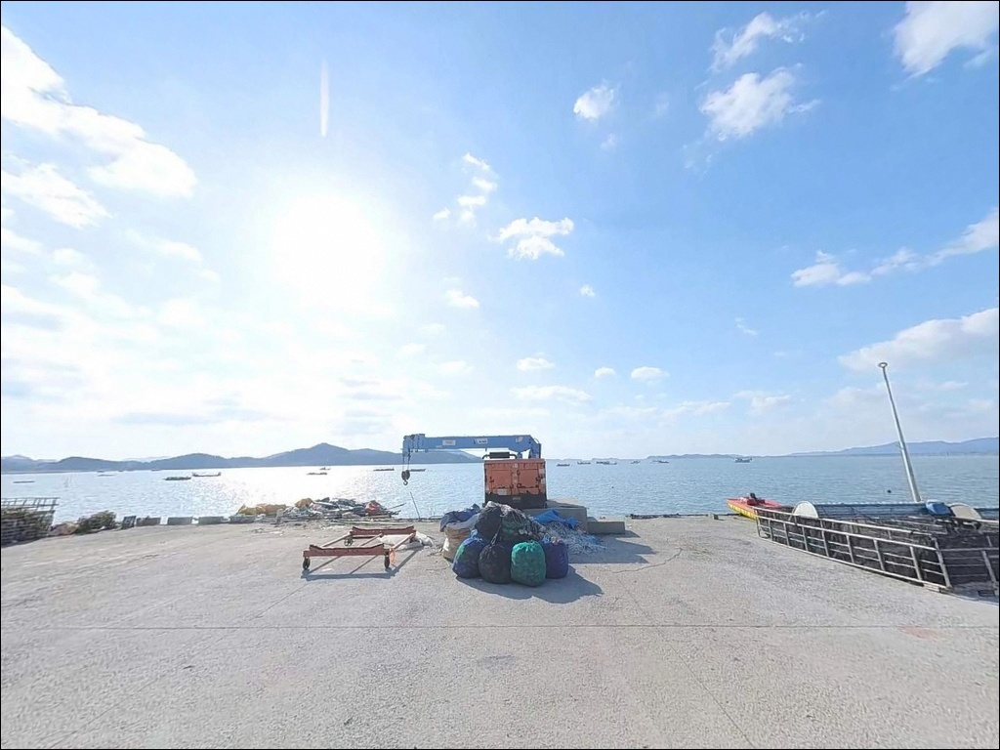
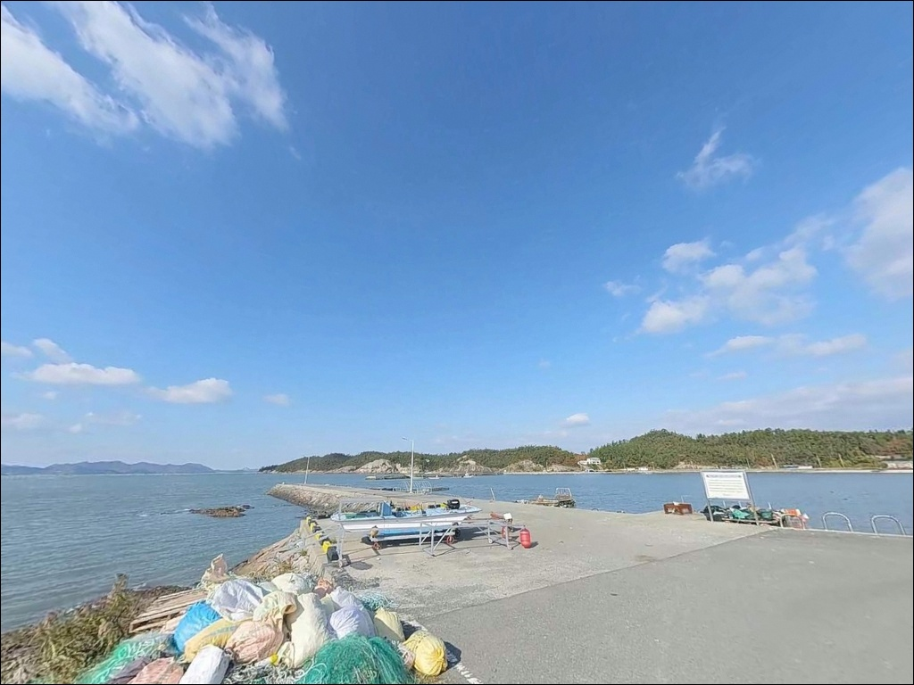
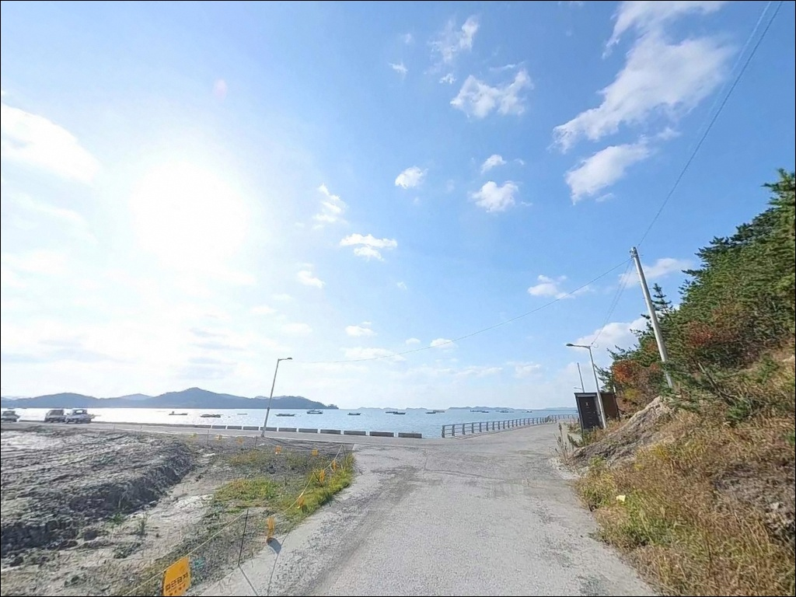

이 페이지에는 광고(제휴 링크 포함)가 있으며, 광고 링크를 통해 구매하면 운영자가 판매 수익 또는 수수료를 받을 수 있습니다. 포인트 사진: 카카오맵 스카이뷰·로드뷰. 이 페이지의 지도·사진 이미지는 카카오맵의 실제 서비스 이미지와 다를 수 있습니다.

한자리 선착장
전남 해남군 황산면 한자리 1109-7
물때를 확인하지 않고 이 선착장에 도착하면
간조 시 갯벌이 넓게 노출되어
낚시 채비를 던질 수면 자체가 줄어드는
상황을 맞닥뜨리게 됩니다.
서해와 남해가 만나는 조류 영향권에 위치한
이곳은 만조 전후 타이밍이 낚시 가능 여부를
결정하는 구조입니다.
전남 해남군 황산면 한자리에 자리한
이 선착장은 2008년 어촌정주어항으로 지정된
소규모 공식 항입니다.
한자 구간(70m)과 산소 구간(100m),
총 170m 규모로 구성되어 있으며
화원반도 남단 해안에서
갯벌·양식장이 어우러진 전형적인
서해안 내만형 지형을 갖추고 있습니다.
이 글은 한자리 선착장의
진입 환경, 차박 여건, 물때 판단 기준,
낚시 방식별 지형 적합성에 집중합니다.
조황 단정이나 특정 어종 보장은
이 글의 범위에 포함되지 않습니다.

한자리는 황산면 외곽 남단 해안에 위치한
소규모 어촌 마을로,
황산면 소재지에서 해안 방향으로 이어지는
농로와 해안 제방 도로를 통해 진입합니다.
왕복 1~1.5차로 수준의 협소한 구간이
포함된 경로로, 교행 공간이 넉넉하지 않습니다.
소형 승용차 기준으로는 진입에 큰 어려움이 없는 편이지만,
대형 SUV나 캠핑 장비를 갖춘 차량이라면
출발 전에 위성지도로 안산길 경로를
반드시 확인하는 것이 안전합니다.
회차 공간도 선착장 인근 공터로 제한되어
후진 진출이 어려운 차량은
갓길 여건까지 함께 살펴야 합니다.
주차는 산소버스정류장 인근 또는
선착장 접안부 앞 소규모 공터를
활용하는 방식이 현실적인 선택입니다.
어선 이동이 이루어지는 새벽~오전 시간대에는
작업 동선을 막지 않는 자리를 먼저 확보하는 것이
기본 매너입니다.

한자리는 황산면 13개 법정리 중 하나로,
소규모 어촌 마을 특성상 민가 밀집도가 낮고
야간 차량 통행 빈도도 적은 편입니다.
프라이버시 측면에서는
상대적으로 조용한 체류 환경을
기대해볼 수 있는 곳입니다.
다만 가로등 시설이 충분하지 않을 가능성이 높아
야간 헤드랜턴은 필수 장비입니다.
갯벌형 내만 지형 특성상
외해에 비해 파도 소음은 적은 편이나,
화원반도 남단 방향에서 불어오는
계절성 바람 영향은 사전에 확인해야 합니다.
선착장 공터 규모가 넉넉하지 않아
차박을 메인 목적으로 삼기에는
공간 여건이 제한적인 편입니다.
낚시 후 단시간 체류하는 용도로 접근하는 것이
이 포인트 규모에 맞는 활용 방식입니다.
차박이란 차량을 숙박 공간으로 활용하며
현장에서 하룻밤 머무는 여행 방식입니다.

한자리 선착장 반경 3km 이내에서
확인 가능한 편의시설 정보는 없습니다.
황산면 소재지 방향으로 이동하면
기본 생활시설 이용이 가능하나
거리와 운영 시간은 현장 출발 전에
직접 확인하는 것이 안전합니다.
응급 상황 발생 시 황산119지역대와
황산파출소가 반경 10km 내
가장 가까운 공공 대응 기관으로 파악됩니다.
해남읍 방향까지는 15~20km 이상 거리가 있어
의료 접근성이 낮은 지역입니다.
식수, 얼음, 낚시 소품, 연료 모두
출발 전 황산면 소재지 또는 해남읍에서
완전 자급 체제로 준비하고 진입하는 것이
현실적인 방문 방식입니다.

한자리 선착장에서 가장 먼저 확인할 것은
물때입니다.
갯벌이 넓게 드러나는 서해안 내만형 지형 특성상
간조 시에는 낚시 가능한 수면 자체가 줄어들며,
채비를 던져도 조류 흐름이 없어
입질 기회가 거의 사라지는 구간이
생깁니다.
바다타임에서 황산면 기준 물때를 확인하고
만조 전후 1~2시간을 노려 출발 시각을 맞추는 것이
이 포인트를 제대로 활용하는 기본 전략입니다.
간조 시 갯벌이 드러나는 포인트에서는
만조 전후 1~2시간이 낚시 가능한 실질적인 타이밍입니다.
어촌 선착장 특성상 어선 조업 공간이 우선입니다.
새벽~오전 이른 시간에는 어업인 통행이 있으니
작업 동선과 어구에 접촉하지 않도록 자리를 잡고,
야간 낚시 시에는 헤드랜턴과 구명조끼를
반드시 착용해야 합니다.

한자리 선착장의 지형 핵심은
갯벌과 내만이 공존하는 기수역 환경입니다.
공식 등록 어종이 굴, 짱둥어, 장어인 점은
이 선착장 주변이 조간대 갯벌 생태와
기수역성 환경을 갖추고 있음을 나타냅니다.
장어(붕장어)가 서식하는 기수역 혼재 환경으로,
원투낚시 대상 어종을 기대해볼 수 있는 구조입니다.
한자 구간(70m)과 산소 구간(100m)으로 나뉜
총 170m 선착장 구조에서
선착장 끝단 쪽이 상대적으로 수심이 확보되는 편이며,
선착장 외측 방향이 내측보다
조류 흐름이 살아 있는 구간입니다.
내항 쪽은 잔잔한 수면을 유지해
찌낚시에 어울리는 조건이 만들어집니다.
고천암방조제(길이 약 1,874m)가 인접해 있어
외해 파도 차단 효과를 받는 구조입니다.
이 구조는 파도 영향이 적은 안정적인 낚시 환경을
만들지만, 동시에 조류 순환이 느려
물때 의존도가 높아지는 요인이기도 합니다.
출조 전에 황산면 일대 최신 조황을
검색해 보시기 바랍니다.

한자리 선착장 지형에서 가장 먼저 떠올릴 방식은
원투낚시입니다.
기수역 혼재 환경과 갯벌 경계부 지형은
붕장어, 가자미류, 보리멸을 기대해볼 수 있는
구조 조건을 갖추고 있습니다.
청갯지렁이 또는 오징어 미끼를 이용해
선착장 외측 방향으로 채비를 멀리 던지는 방식이
이 지형에 맞습니다.
가을철 망둥어 생활낚시도 고려할 만합니다.
같은 황산면 해안선의 징의도 인근은
가을 망둥어 포인트로 알려진 곳으로,
유사한 갯벌·내만 지형을 공유하는
한자리 선착장 역시 9월~11월 사이
망둥어 생활낚시를 기대해볼 수 있는 환경입니다.
전통 방식으로 대나무 낚싯대를 활용하는
접근도 이 구간 낚시 분위기와 잘 맞습니다.
루어낚시는 선착장 구조물 주변과
석축 경계부를 중심으로 탐색하는 방식으로 운용합니다.
농어나 볼락류를 기대해볼 수 있으며,
갯벌 지형이 넓은 구간에서는
바닥 걸림에 주의하며 가벼운 채비를
천천히 리트리브하는 방식이 현실적입니다.

한자리 선착장의 조건이 여의치 않을 때
가장 먼저 이동할 대안은
고천암방조제입니다.
황산면 한자리 1637-14 인근에 위치하며
약 1,874m의 긴 제방 구조로
차량 접근이 수월하고 낚시 공간도 넉넉합니다.
루어낚시와 원투낚시 모두 운용 가능한
대안 포인트입니다.
조류 소통이 더 원활한 환경을 원한다면
황산면 징의도 방면 선착장을 검토할 수 있습니다.
내만 구조인 한자리보다
외해와의 연결이 더 직접적인 지형으로,
조류 흐름을 활용한 낚시에
상대적으로 유리한 여건을 갖추고 있습니다.
어란진항은 감성돔 포인트로 거론되는 곳으로,
시설이 갖추어진 항구형 낚시 환경을 원할 때
이 권역에서 검토할 수 있는 대안입니다.
한자리에서 이동하면
보다 안정적인 주차 여건과
외항 낚시 조건을 확보할 수 있습니다.

원투낚시나 망둥어 생활낚시를 즐기는 낚시인이라면
한자리 선착장의 기수역·갯벌 지형은
충분히 시도해볼 만한 구조입니다.
온라인 정보가 적어 아직 덜 알려진 포인트이며,
진입로가 좁은 소규모 어촌 선착장에서는
사전 도로 확인이 방문 성패를 가릅니다.
물때 없이 찾아가거나,
자급 준비 없이 도착하면
낚시도 차박도 여의치 않은 상황이
기다리고 있습니다.
물때 확인, 완전 자급 준비, 진입로 사전 점검,
이 세 가지를 갖추고 방문한다면
황산면 남단에서 조용한 하루를
보낼 수 있는 포인트입니다.
편의시설 없이 갯벌을 바라보며
밀물을 기다리는 낚시와,
그 시간 옆에 차를 세우고 하룻밤 머무는 차박을
함께 즐기고 싶은 낚시인에게
어울리는 출조 목적지입니다.